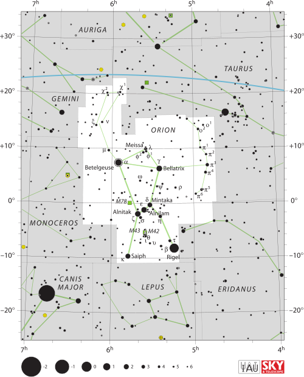

The names of stars arise from a layered system of proper names, systematic letter-and-number designations tied to the constellation in which they appear, and catalogue numbers that extend coverage to the billions of stars too faint to carry any traditional name. The International Astronomical Union (IAU) is the sole body with authority to approve official proper names.

IAU / Sky & Telescope (Roger Sinnott & Rick Fienberg), CC BY 3.0
{kind=link}
Proper names — familiar names such as Sirius, Rigel, and Vega — are the oldest layer of stellar nomenclature. Of the roughly 10,000 stars visible to the naked eye, fewer than 600 carry IAU-approved proper names (543 as of March 2026). Most derive from Arabic, transmitted to Europe through medieval translations of Ptolemy’s 2nd-century Almagest. The 10th-century Arab scholar Abd al-Rahman al-Sufi, in his Book of Fixed Stars, standardised many of these Arabic forms; frequent mis-transcription during later Latin translations produced the inconsistent spellings that persisted for centuries. Other proper names are Latin (Capella = ‘small female goat’) or Greek (Arcturus = ‘Guardian of the Bear’). A few honour astronomers: Barnard’s Star and Kapteyn’s Star commemorate their discoverers, while ‘Peacock’ (α Pavonis) was assigned in 1937 to give British aviators a pronounceable navigational reference. Commercial firms that sell ‘star naming rights’ as gifts do not receive IAU recognition; any such name appears only in the selling company’s private catalogue.
Bayer designations were introduced by the German astronomer Johann Bayer in his 1603 star atlas Uranometria. Bayer assigned Greek letters — α through ω — to stars within each constellation in roughly decreasing order of brightness, followed by the genitive form of the constellation’s Latin name: for example, α Tauri (Aldebaran). When the 24 Greek letters were exhausted, Bayer continued with uppercase A and then lowercase b through z. The ordering is imperfect; Pollux (β Geminorum) is brighter than Castor (α Geminorum) because Bayer sometimes assigned letters arbitrarily within a magnitude class. The scheme covers approximately 1,564 stars.
Flamsteed designations number stars in sequence by increasing right ascension within each constellation. Although associated with John Flamsteed’s posthumous 1725 catalogue Historia Coelestis Britannica, the sequential numbers were added by the French astronomer J.-J. Lalande in 1783. Flamsteed numbers cover 2,554 stars in the northern sky and are generally preferred over Bayer’s Roman-letter extensions when no Greek-letter Bayer designation exists—for example, 61 Cygni, the first star to have its distance measured (Friedrich Bessel, 1838).
Variable star designations follow a separate scheme devised by Friedrich W. Argelander in the early 19th century. Stars discovered to vary in brightness within a constellation receive uppercase letter designations beginning at R (to avoid overlap with Bayer letters), proceeding through Z, then double-letter pairs RR–RZ, SS–SZ, and so on to ZZ, then AA–QZ (J omitted throughout) — 334 combinations in total. Thereafter variables are numbered V335, V336, and so on. The catalogue is administered by Moscow’s Sternberg Astronomical Institute under IAU delegation since 1946.
For stars in multiple systems, uppercase Latin letters are appended to the system name to identify each component: the star Mizar comprises four components labelled Mizar Aa, Ab, Ba, and Bb. Exoplanets orbiting a star receive lowercase letters starting at b, so that 51 Pegasi b denotes the first planet found around that star.
Beyond these systematic designations, the vast majority of stars are known only by their entry in a major catalogue. The Henry Draper Catalogue (1918–1924), whose classification of 225,300 stars was led by Annie Jump Cannon, remains widely cited; entries carry the prefix HD. The Hipparcos satellite catalogue (ESA, 1997) provides precise parallaxes for ~118,000 stars under the prefix HIP. Modern surveys extend coverage to hundreds of millions of objects: the USNO-B1.0 catalogue lists over a billion sources and the Guide Star Catalog II reaches 945 million stars to magnitude 21.
The IAU established its Working Group on Star Names (WGSN) in May 2016 to produce a definitive, internationally agreed list of proper names. The WGSN approved 125 names in its first two batches (July 2016) and continued approvals through subsequent years. The related NameExoWorlds campaigns (2015, 2019, 2022) invited public submissions from member nations, adding culturally diverse names such as Cervantes, Copernicus, and Rosalíadecastro for exoplanet host stars.
See also: star, constellation, variable stars, spectral classification, binary star, apparent magnitude.